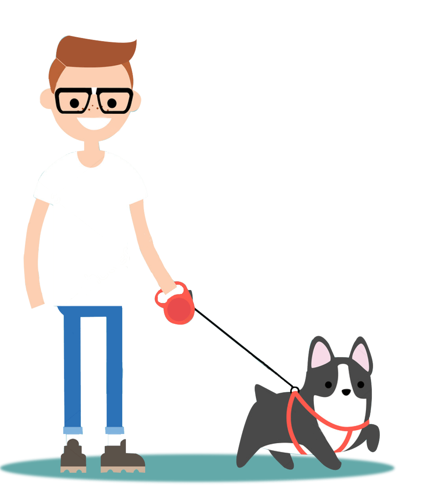

1
Creamos un Alerta
Creamos un anuncio en redes sociales que se mostrará a las personas que están en la zona o que hayan circulado en el área de búsqueda.
2
Viralizamos
Mostramos el anuncio en varios kilómetros a la redonda de la zona donde se extravió.
3
Encontramos
En poco tiempo te contactarán las personas que creen haberla visto. ¡No estás solo, somos miles! Y nosotros, somos el medio que te ayuda a reencontrarte con tu mejor amigo.